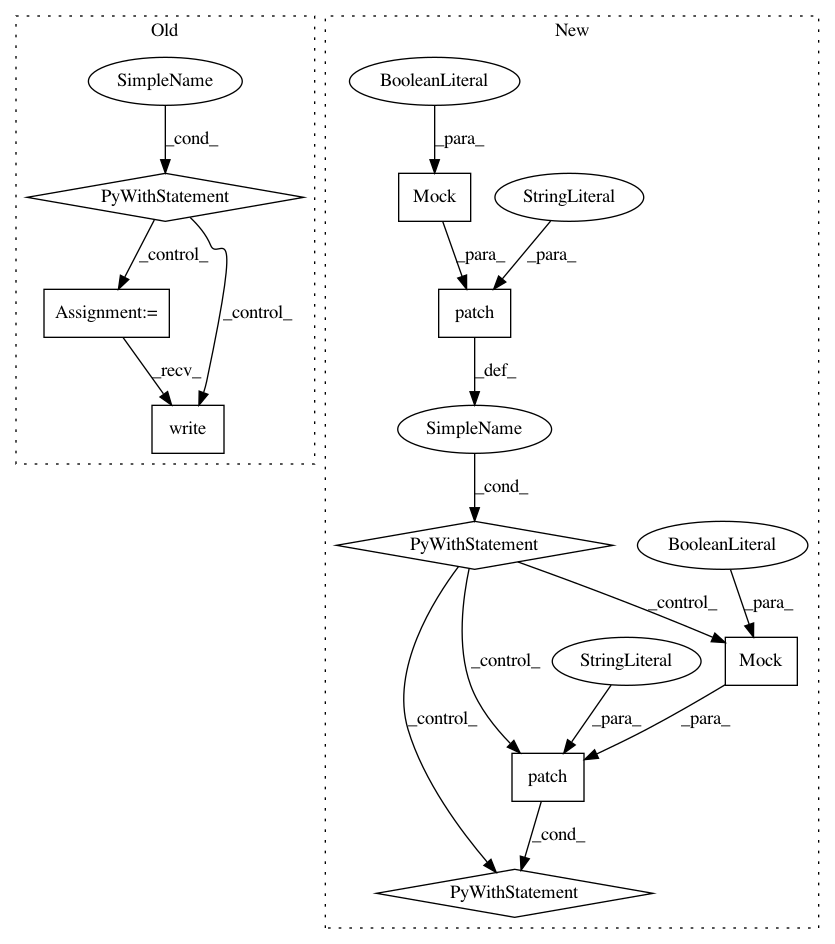

272539105f949ac28e37adac0474ac28d65256e0,tests/helpers/test_config_validation.py,,test_isfile,#,67
Before Change
with tempfile.TemporaryDirectory() as tmp_path:
tmp_file = os.path.join(tmp_path, "test.txt")
with open(tmp_file, "w") as tmp_handl:
tmp_handl.write("test file")
schema(tmp_file)
def test_url():
After Change
// patching methods that allow us to fake a file existing
// with write access
with patch("os.path.isfile", Mock(return_value=True)), \
patch("os.access", Mock(return_value=True)):
schema("test.txt")
def test_url():
Test URL.
schema = vol.Schema(cv.url)
In pattern: SUPERPATTERN
Frequency: 3
Non-data size: 9
Instances
Project Name: home-assistant/home-assistant
Commit Name: 272539105f949ac28e37adac0474ac28d65256e0
Time: 2016-10-17
Author: rob.capellini@gmail.com
File Name: tests/helpers/test_config_validation.py
Class Name:
Method Name: test_isfile
Project Name: home-assistant/home-assistant
Commit Name: 272539105f949ac28e37adac0474ac28d65256e0
Time: 2016-10-17
Author: rob.capellini@gmail.com
File Name: tests/components/camera/test_local_file.py
Class Name: TestLocalCamera
Method Name: test_loading_file
Project Name: home-assistant/home-assistant
Commit Name: 272539105f949ac28e37adac0474ac28d65256e0
Time: 2016-10-17
Author: rob.capellini@gmail.com
File Name: tests/test_bootstrap.py
Class Name: TestBootstrap
Method Name: test_from_config_file